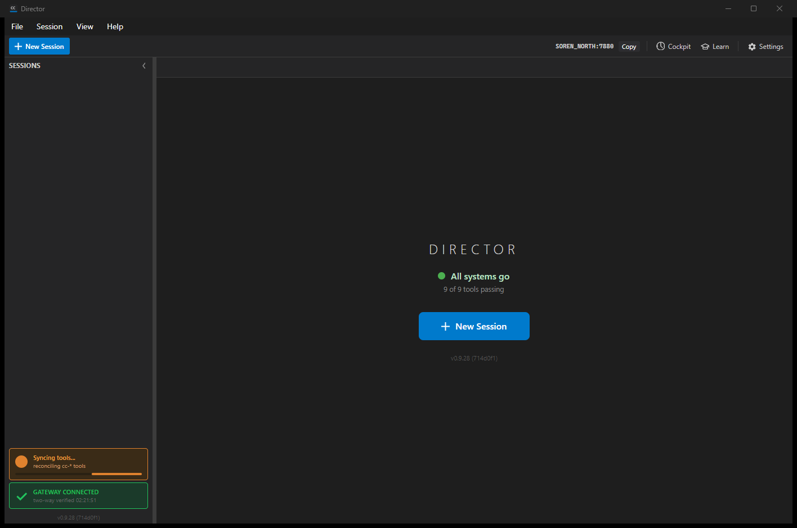
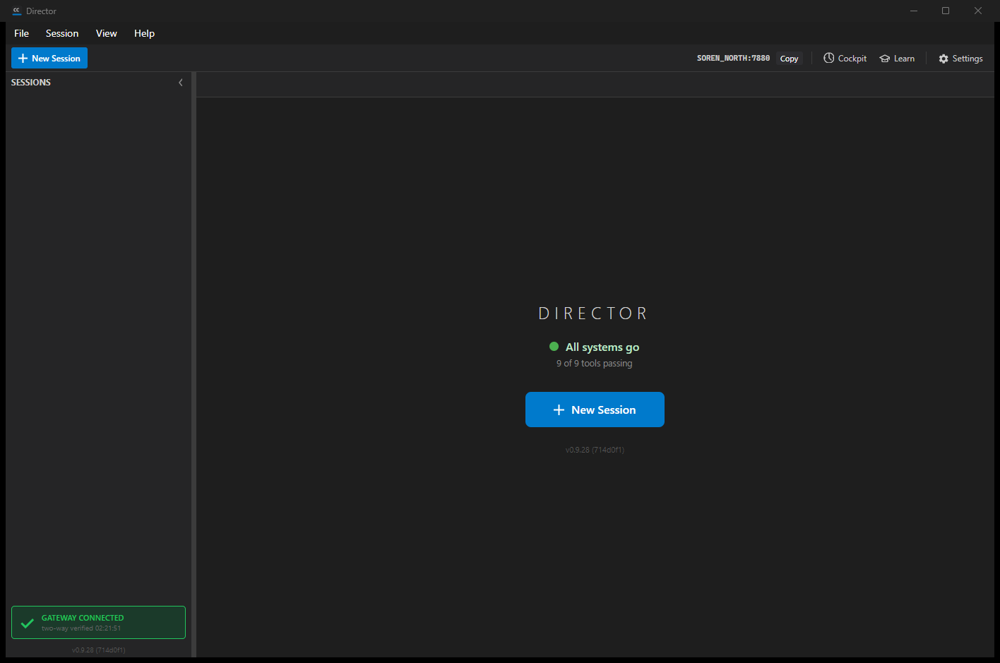

The rail's "cc-* tools" corner badge is no longer a passive "fix me" warning. When tool drift is
detected and tools.autoUpdate.enabled is on, the badge turns orange and reads
"Syncing tools..." with a live progress spinner while the Director automatically reconciles the
toolset; it returns to green (and hides) the moment the tools are back in sync. It only falls to a
red "Tools need attention" state after the automatic reconcile has failed repeatedly. When
auto-update is off the badge behaves exactly as before: a passive amber warning that opens Settings
on click.
CcDirector.Core.Tools.ToolsSyncStateMachine
(+ ToolsIndicatorState enum: InSync / Syncing / Warning / NeedsAttention). It owns
the transition rules, the consecutive-failure count, the bounded retry ceiling
(MaxReconcileAttempts = 3), and the exponential backoff schedule. No Avalonia, no I/O.ToolReconciler.HasDrift() - the same pure reads
ReconcileAsync uses to detect drift (missing shim, orphaned legacy alias shim, broken
venv), mutating nothing, so the badge reflects exactly the drift the reconcile would act on.ToolReconciler.ReconcileAsync
off the UI thread; one reconcile in flight at a time (debounce), a cooldown + one-shot retry timer
between attempts (backoff), and a cross-guard against the existing manual repair. Renders the badge
per state and logs every transition.ToolsIndicator gains code-settable colors, a hideable "!" glyph, and
an indeterminate progress spinner row (shown only while Syncing) so the orange state reads as live
work, not a frozen badge.HasDrift tests.| # | Criterion | How met / proof |
|---|---|---|
| 1 | Distinct Syncing state in the state machine (green / warning / red) | ToolsIndicatorState {InSync, Syncing, Warning, NeedsAttention}; transitions covered by unit tests. |
| 2 | Drift + enabled -> orange, auto-trigger ReconcileAsync, debounced | Live log: InSync -> Syncing (drift=True, autoUpdate=True) then tools auto-reconcile starting. One-in-flight + cooldown guards; unit test Evaluate_DriftEnabledButReconcileInFlight_.... |
| 3 | On success returns to green and hides; no click needed | Live log: Syncing -> InSync (reconcile resolved drift); see green-resolved.png (badge gone, "9 of 9 tools passing"). |
| 4 | Repeated failure (with backoff) -> red "Tools need attention" | State machine ceiling = 3; NextBackoff() 5s, 10s, ...; unit tests OnReconcileFailed_AtCeiling_... and Evaluate_DriftEnabledAtCeiling_StaysRedAndStopsRetrying. Backoff observed live (retry scheduled in 5s). |
| 5 | Auto-update off -> passive warning as today, no auto-reconcile | When disabled the drive path never probes HasDrift and never reconciles; unit test Evaluate_DriftButAutoUpdateDisabled_IsPassiveWarningAndDoesNotReconcile. (Live: with the user's real enabled=false the badge stayed quiet/passive.) |
| 6 | Orange styling per VisualStyle; responsive <100ms; shows progress not a frozen badge | Orange rendered synchronously before any awaited work (StartToolsReconcile paints then runs in background); indeterminate ProgressBar spinner; see orange-syncing.png. |
| 7 | Logs each state transition | FileLog.Write("[MainWindow] tools indicator state: X -> Y ...") at every transition; see the log excerpt below. |
| 8 | Build clean + tests for the transitions | dotnet build cc-director.sln = 0 warnings / 0 errors. 13 + 4 new tests pass; existing reconciler/home tests still pass. |
| 9 | Proven in the running app: orange during a reconcile, green after | Screenshots below, captured from cc-director17.exe against the real install with a single injected read-only orphaned legacy shim as the sole drift. |


2026-06-29 02:21:58.955 [MainWindow] tools indicator state: InSync -> Syncing (drift=True, autoUpdate=True) 2026-06-29 02:21:58.955 [MainWindow] tools auto-reconcile starting (indicator Syncing) 2026-06-29 02:21:59.017 [MainWindow] tools auto-reconcile done: outcome=Reconciled, actions=1 2026-06-29 02:22:05.957 [MainWindow] tools indicator state: Syncing -> Syncing (reconcile ineffective; failures=1, outcome=Reconciled, driftRemains=True) 2026-06-29 02:22:05.957 [MainWindow] tools auto-reconcile retry scheduled in 5s 2026-06-29 02:22:11.032 [MainWindow] tools auto-reconcile starting (indicator Syncing) 2026-06-29 02:22:17.938 [MainWindow] tools indicator state: Syncing -> InSync (reconcile resolved drift)
(The drift was a read-only orphaned legacy alias shim, deliberately staged so the first reconcile
could not purge it - this is what keeps the orange state on screen long enough to capture and exercises
the backoff retry. Clearing read-only lets the next retry purge it, and the badge returns to green. The
full excerpt is in director-log-excerpt.txt.)
No architecture or security drift. The change reuses the existing reconcile engine (#826),
lifecycle/config (#827), and the toggle (#828). No new container; no change to any blocking security
rule. ToolReconciler.HasDrift() is an additive read-only method.